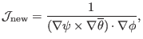
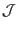
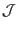

After the magnetic coordinates are constructed, we can evaluate the Jacobian
by using directly the definition of the Jacobian,
i.e.,

which can be further written as
where the partial differential can be evaluated by using numerical
differential schemes. The results obtained by this way should agree with
results obtained from the analytical form of the Jacobian. This consistency
check provide a verification for the correctness of the theory derivation and
numerical implementation. In evaluating the Jacobian by using the analytical
form, we may need to evaluate
 , which finally reduces to
evaluating
, which finally reduces to
evaluating
 . The value of
. The value of
 is obtained
numerically based on the numerical data of
is obtained
numerically based on the numerical data of  given in cylindrical
coordinate grids. Then the cubic spline interpolating formula is used to
obtain the value of
at desired points.
(
calculated by the second method (i.e. using
analytic form) is used in the GTAW code; the first methods are also
implemented in the code for the benchmark purpose.) In the following sections,
for notation ease, the Jacobiban of the constructed coordinate system will be
denoted by
, instead of
.
given in cylindrical
coordinate grids. Then the cubic spline interpolating formula is used to
obtain the value of
at desired points.
(
calculated by the second method (i.e. using
analytic form) is used in the GTAW code; the first methods are also
implemented in the code for the benchmark purpose.) In the following sections,
for notation ease, the Jacobiban of the constructed coordinate system will be
denoted by
, instead of
.
yj
2018-03-09